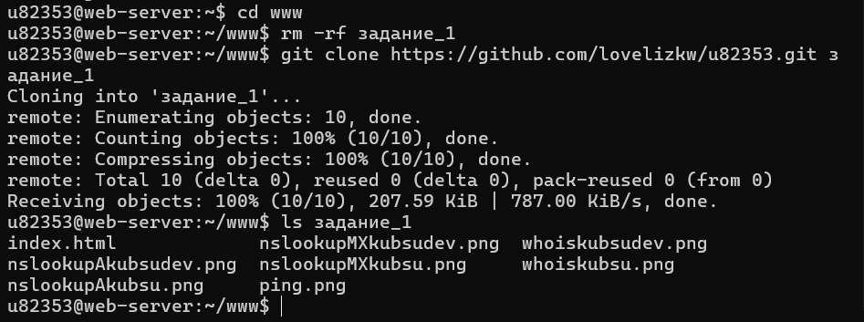
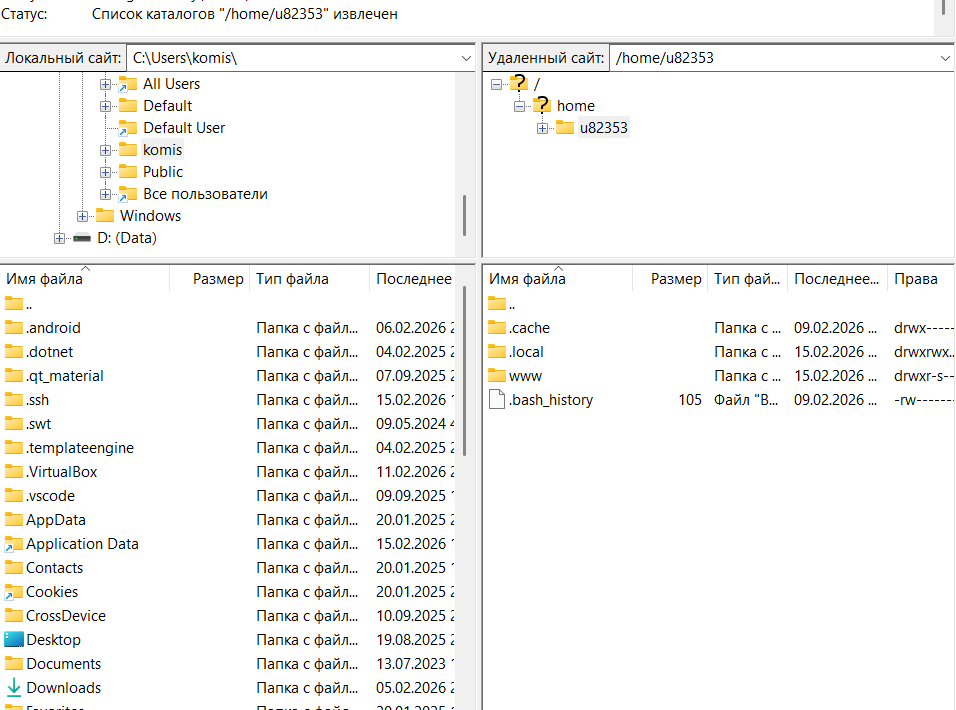

Отчёт по заданию №1
«Программно-аппаратные средства Web»
Студент: u82353
Цель задания: ознакомиться с основными командами для работы с сетью и веб-сервером, получить практические навыки работы с SSH, DNS, whois, Git и SFTP.
Пункт 1. Подключение к учебному серверу по SSH
Получила от преподавателя логин
u82353 и пароль для доступа к учебному серверу
kubsu-dev.ru.
Подключилась по протоколу SSH с помощью клиента PuTTY:
- Host Name (or IP address): kubsu-dev.ru
- Port: 22
- Connection type: SSH
После ввода логина и пароля успешно вошла в терминал сервера.
Пункт 2. Узнать IP-адрес веб-сервера kubsu.ru с помощью ping
На сервере выполнила команду ping kubsu.ru -c 4 (опция -c 4 ограничивает количество пакетов до 4, чтобы пинг не был бесконечным).
Команда показала реальный IP-адрес сервера kubsu.ru — 185.13.84.92.

Пункт 3. Узнать A- и MX-записи доменов kubsu.ru и kubsu-dev.ru с помощью nslookup
Выполнила следующие команды:
Для kubsu.ru:
nslookup kubsu.ru — получила A-запись (IP-адрес)nslookup -type=MX kubsu.ru — получила MX-запись (почтовый сервер)
Для kubsu-dev.ru:
nslookup kubsu-dev.ru — получила A-записьnslookup -type=MX kubsu-dev.ru — MX-запись не найдена (No answer)


Пункт 4. Узнать дату регистрации доменов с помощью whois
Выполнила команды:
whois kubsu.ruwhois kubsu-dev.ru
В выводе искала строки с датой регистрации (created / registered).
Для kubsu.ru дата регистрации видна в выводе whois.


Пункт 5. Создать веб-страницу index.html со скриншотами и разместить на сервере через Git
Создала файл index.html локально в текстовом редакторе. Добавила в него текст задания и теги <img> со скриншотами.
Добавила все файлы в локальный git-репозиторий:
git add index.html *.png
git commit -m "Добавлены скриншоты и описание пунктов задания"
git push
Запушила изменения в удалённый репозиторий на GitHub.
На сервере выполнила:
cd www
rm -rf задание-1
git clone https://github.com/lovelizkw/u82353.git задание-1
Страница стала доступна по адресу: http://u82353.kubsu-dev.ru/задание-1/

Пункт 6. Скачать файлы с сервера через SFTP с помощью FileZilla
Установила программу FileZilla.
Подключилась по протоколу SFTP:
- Host: kubsu-dev.ru
- Username: u82353
- Password: (мой пароль)
- Port: 22
- Protocol: SFTP
Перешла в каталог /www/задание-1/
Скачала все файлы (index.html и все скриншоты .png) на локальный компьютер.
Сделала скриншот окна FileZilla после успешного скачивания (с логом переноса файлов).
Добавила скриншот в репозиторий GitHub, обновила index.html и выполнила git pull на сервере.
